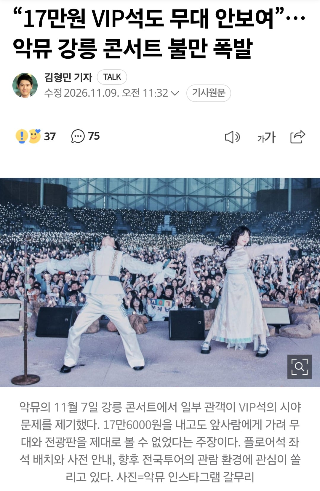

좌석배치 븅신같이해서 vip석 앉고 노래만 듣다왔다고 함

좌석배치 븅신같이해서 vip석 앉고 노래만 듣다왔다고 함
그건 서울 콘서트일 걸.
애매하네. 앞사람때문에 안보인걸 악뮤가 환불해줘야하는건지
단차없는 스케이팅 장에 가시각도 설계 ㅈ까고 제일 잘보여야할 vip석을 저따구로 팔아먹었으니 문제 맞음
싸이는 가건물 구조물로 단차를 줘서 만들던데 이게 바로 짬빠 차이인가
앞사람전체가 2m 거인들만 앉은거 아니라면 공연장 설계문제 맞는듯...
vip석은 개붕이가 말한 앞사람 때문에, 무대 장치 때문에 안보이는걸 피하고 가까이에서 보기 위해 존재하는 좌석이 아닐까 하는 생각을 해보자.
앞사람이 존재해도 가까이서 보여야 되는게 vip석이다
니는 영화관가서 앞사람이 화면 가리면 그냥 소리만 듣고 나올거임? 병신같은 소릴하네
ㅇㅇ 해줘야함 vip석인데 이런일이 있어선 안됨
다른콘서트에서 나오지 않던 불만이 나오면 뭔가 문제 있는게 아닐까?
당연히 해야지
안할꺼면 이제 비싼 vip석 사는 인간이 어딨냐
VIP뜻이 호구인줄아나
VIP석이 그 VIP석이 아님ㅋㅋㅋㅋ
VIP석이 17만6000원 R석이 16만5000원, 시아제한석이 15만4000원
좌석수 비중도 VIP, R, 시아제한석이고. 다른 공연의 일반석을 VIP석으로 부르는건데 이걸 이렇게 쓰면ㅋㅋㅋ
네말대로면 VIP석이 제일 비싼표라는 얘기 아님?
공연계에선 단차가 없는 플로워석을 vip석이라 부르나봄.
더군다나 예매 페이지엔 시야 방해로 인한 취소와 환불 불가가 적혀 있었다고 하면 뭐 쩔수 없는거지
그냥 지정하는 말 같은거 없고 좆대로 붙이는거라 별의별 이상한 명칭 다나옴
그래서 이름이 중요한게 아니라 가격이 중요한거지
몇번째로 비싼 좌석이냐로 얼만큼 좋은좌석인지를 가늠해야되는거니까
여기선 R석이 말석인데 R-S-A로 최상위석에 붙이기도 함
비싼돈 내고 보러갔는데 못보면 기분 나쁠만해
사실상 무대에서 가까운순으로 등급붙는건데 바닥은 무대 높은거 아니면 저꼴나기 좋은데 많음
근데 굳이 스탠딩말고 좌석이 콘서트보기는 편기한 하더라
통신사할인받고 뭐하고 해서 영화관 갔는데 평지좌석이라 화면 안보이면 지랄지랄떨거면서 17만원 VIP석 콘서트보러 간 사람들한테는 ㅈㄴ 엄근진이네ㅋㅋㅋㅋㅋ
공연 기획이 이래서 어려운 일 같음. 사람이 많이 모이면 온갖 예상치 못한 일이 발생하니.
Very Idiot Person이 되버림 ㅠ
무대설계 자체를 체조경기장으로 잡고
그걸토대로 지방공연은 억지로 끼워넣어서 그런듯함
스타디움 스탠딩은 보러 가는거 아님
음악용 공연장은 그냥 보면 모르지만 미세하게 뒤로 갈수록 경사가 있어서 뒤에서도 시야가 확보되도록 되어 있음
근데 축구장이나 일반 컨퍼런스홀 같은데서 하는 라이브 가보면 그런게 없어서
네다섯명만 앞에 끼고 있어도 스테이지에서 뭐 하는지 하나도 안 보임
그런데 스탠딩이면 차라리 제일 뒤로 가는게 나을 정도
음향 문제는 말할 것도 없음.. 이건 사운드 엔지니어들 갈아넣으면 뭐가 되긴 한다더라 잘 모르지만
그치만 mcr 행님들은 지난주 아니면 또 언제 올 줄 모르는걸 ㅠㅜ
mcr은 ㅇㅈ이긴 함... 그리고 애초에 스크린이 있으면 내가 쓴 문제점은 별로 신경 안 써도 되고 ㅋㅋ
그래서 보통 스타디움은 무대를 높여버리는데 악뮤는 사진으로만 봐도 무대가 낮음...
좌석을 엄청 빽빽히 했나보네
원래 플로어석이나 스탠딩은 화면만 보다 오는데가 아니라고?
가격이 vip가 아니었네
악뮤 내 취향은 아닌데 다들 뭐가 좋아서 가는거지
니 말대로 취향 차이지
난 좋아하긴 함
와 멍청함을 한 문장으로 표현 해보라고 했을 때 순위권에 들만한 멋진 표현인걸?
고랩의 품격
전여친 때문에 가봤는데 난 재밌었음 일단 다 아는 노래라
대부분 콘서트는 가보면 찐팬 아니면 모르는 노래 많이 나옴
근데 그때도 콘서트장 부산 벡스코였는데 좌석이 논란되는 저런식이긴 했음ㅋㅋㅋ....
악뮤라면 뭔가 더 섬세하게 할거 같았는데 아니라서 더 화나는거같기도
단차 없으면 앞좌석 제외하고는 차라리 2층이 나음
돌출 무대라도 있으면 무대 양옆도 나쁘진 않음
어떻게든 가까이에서 보겠다 아니면 그냥 2층 추천
자리하나 잘못 섭외한 바람에
악동뮤지션이 아니라 악성뮤지션 취급받네
전참시에서 무대 존나 체크한다고 광고 개때렸는데 뭔 섭외잘못 하나 운운해 이런애들이 제일 악질임
플로어석은 진짜 아니다 인스파이어 아레나에서 한스짐머의 박자에 맞춰 흔들리는 빛나는 탈모탈모 머리만 2시간 넘게 보고와서 와이프 속상해서 울어따
미친 ㅋㅋㅋ
후기 사진 보고 왔는데 나도 저런 경험 있어서 슬퍼졌음…


얘네 뭐 시야 안좋은 좌석은 시각장애인들한테 뿌렸다는 기사 봤던거 같은데 다른 건가